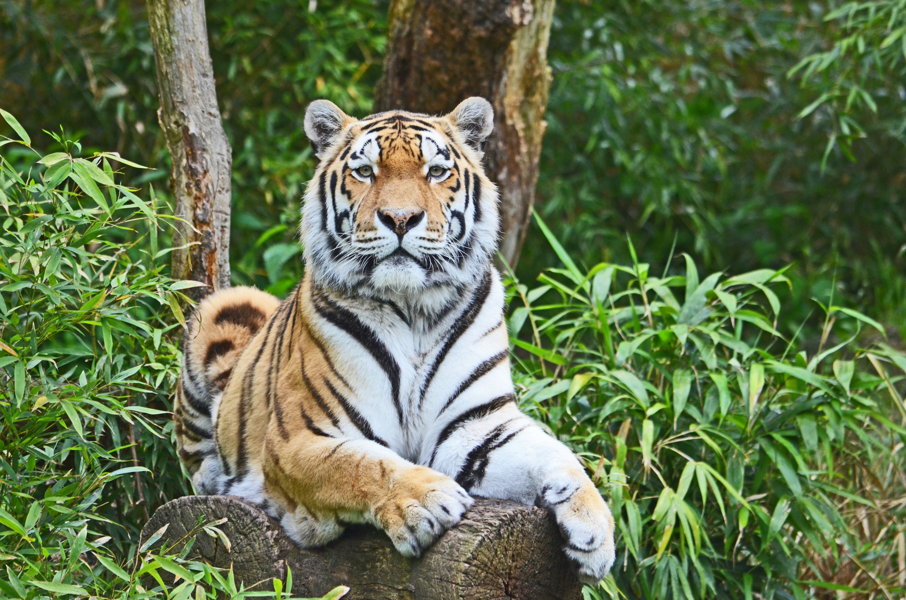

TIGER
Tigers are the largest of all wild cats, easily recognized by their striking orange coats with black stripes. They are solitary hunters, relying on stealth and power to catch their prey.
Tigers are strong swimmers and often cool off in pools, lakes, and rivers. Each tiger’s stripe pattern is unique, much like a human fingerprint.
WHERE WILL YOU FIND THEM
You will find the tigers at pen T09, beside the waterfall exhibit.